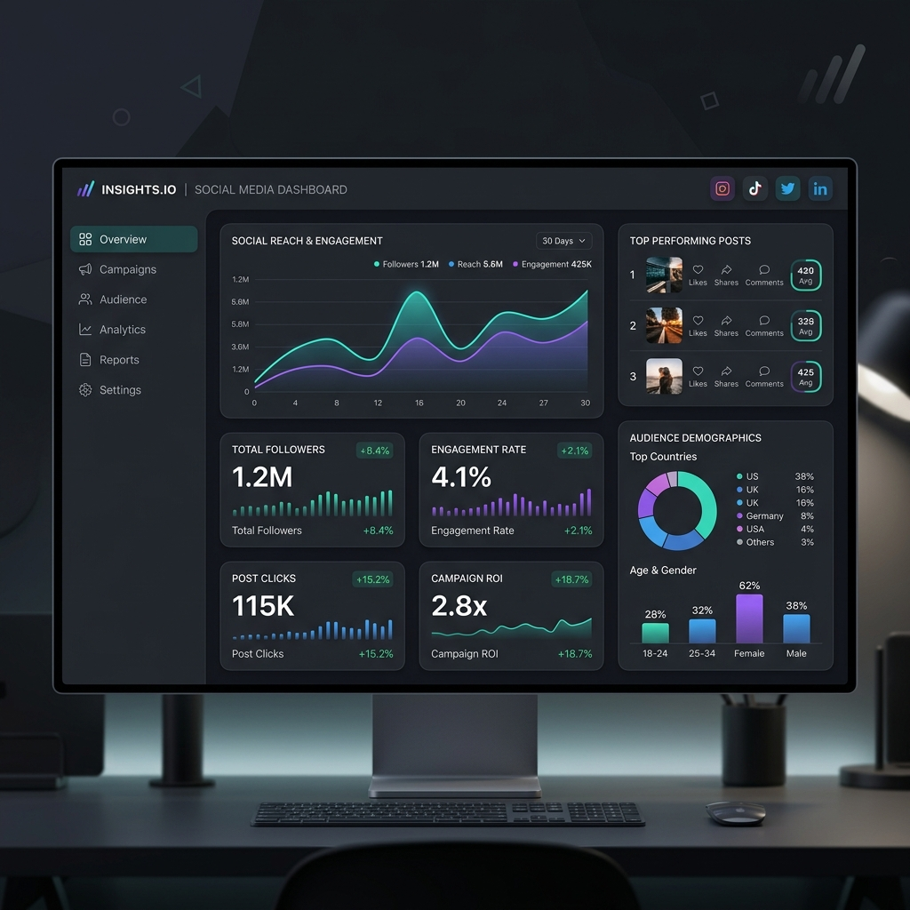

At ClinchWorks, we don’t just manage social media — we build a complete digital presence that connects your brand with the right audience. Our approach combines social media marketing with technical SEO tools like Google Search Console to ensure your website is visible, indexed, and performing effectively on search engines.
We understand how platforms work — not just from a marketing perspective, but from a technical standpoint. By combining social media strategies with search engine insights, we help your website get discovered faster and perform better in real-world scenarios.

We use Google Search Console to monitor, analyze, and improve your website’s visibility on Google. This allows us to understand how users find your website, what keywords they use, and how your pages perform in search results.
By collaborating with us, we ensure your website is properly indexed, optimized, and continuously improved based on real data.
We create targeted strategies that build engagement, trust, and real business growth.
We build or improve websites that are fast, responsive, and optimized for search engines.
We combine marketing and technology to ensure your website performs and ranks effectively.